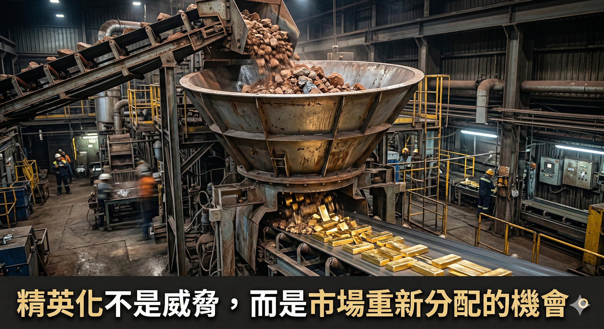

上個月，一位帶了十年團隊的保險主管跟我說了一句話：「老師，我的團隊這兩年少了一半的人，但我們的業績反而是歷年最好的。」
我問他：「你做了什麼改變？」
他說：「我不再盲目找人了。我把所有時間拿來建系統。」
這不是個案。這是整個銷售產業正在發生的「結構性轉變」。
【數字說的故事】
過去幾年，台灣壽險大軍從逼近 40 萬人的歷史高點一路下滑，跌破 38 萬大關。其中，傳統壽險公司的登錄人數更是流失了超過 2 萬人。「人海戰術」的時代正式結束。
但有趣的是，從公會的數據來看，留下來的業務員「穩定度」卻創下近年新高，頭部業務員的人均產能持續逆勢成長。
不只保險業。房仲、車銷、美業、直銷，每個需要「業務」的產業都在經歷同樣的事情：市場不再養得起「靠關係、靠單一說話技巧、靠苦力」的人了。
【為什麼努力的人反而被淘汰？】
我遇過太多這樣的業務：
每天跑 10 組客戶，但手機裡連對方的名字都沒存好。學了 3 天的說話技巧班，回去用了一週就打回原形。每個月的業績像坐雲霄飛車，好的時候不知道為什麼好，差的時候更不知道為什麼差。
問題出在哪？
「不是不努力，是努力的方式沒有辦法被累積。」
你今天用語感與溝通技巧成交了一個客戶，很棒。但下個月呢？下一季呢？你能複製這個結果嗎？如果不能，那你不是在經營事業，你是在「賭運氣」。
【說話技巧 vs 系統：一個本質的區別】
我常跟學員說一句話：「說話技巧讓你成交一陣子，系統才能讓你成交一輩子。」
說話技巧是「一對一」的，你對這個客戶有用，對下一個可能沒用；系統是「一對多」的，你建立一次，它幫你處理一百個客戶。
說話技巧靠記憶力；系統靠流程。 說話技巧隨著你的狀態波動；系統不管你今天心情好不好，它都在運作。
「精英化浪潮」的意思不是「只有天才才能做業務」。恰好相反。它的意思是：有系統的普通人，會打敗沒有系統的天才。
【一套銷售系統的三根支柱】
那一套系統到底包含什麼？
第一根支柱：名單管理。 名單是業務的命脈。但 90% 的業務員的名單管理方式，還停留在「手機通訊錄翻一翻」的程度。完整的名單管理包含四件事：儲存、紀錄、分群、細節。做好這四件事，你才能做到「10 秒查到五年前跟這個客戶講了什麼」。
第二根支柱：成交 SOP。 頂尖業務和普通業務的差距，不是成交率差 10 倍，而是頂尖業務知道自己「為什麼」能成交。從需求探詢到價值表達，從異議處理到成交嘗試，每一步都有流程可以依循。不靠直覺，靠地圖。
第三根支柱：效率工具。 能自動就不要手動。能批次就不要零碎。能提前就不要當天。我曾經一天之內發了 1,400 則客戶關懷簡訊。不是因為我特別勤勞，是因為我有「工具」。
這三根支柱加在一起，就是一套可以讓你「比別人少一個月工時，但業績反而更好」的系統。
【精英化不是威脅，是機會】

很多人聽到「大流失」會害怕。但反過來想：當人海戰術退潮，剩下的精英每個人能分到的市場反而變大了。
前提是，你要是那群擁有「高穩定度」的精英。而成為那群人的方法，不是比別人更拚，是比別人更有系統。
銷售不是做一件 100 分的事，而是 100 件 1 分的事。系統，就是幫你把這 100 件事自動化的東西。
「技巧是手裡的刀，系統是運行的道；靠刀能贏一場仗，靠道能贏一輩子。」
加入泰欣銷售思維 LINE 社群，每週乾貨不間斷。
https://lihi.cc/r5t81
🔧 你的業績卡住了嗎？因為我也走過那段「心累」的路，所以我懂你的痛。如果你想知道...你的「業務原廠設定」是適合開發還是穩定成長？你容易卡在「開發」、「開口」還是「成交」？👇 點擊連結加入 LINE私訊「想知道銷售天賦」，15分鐘幫你找到業務專屬天賦!https://line.me/ti/p/jzdho94spl
Instagram：eintaixin
個人官網